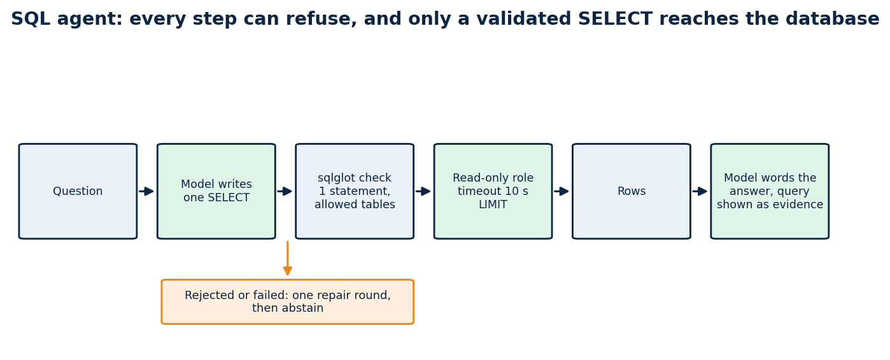
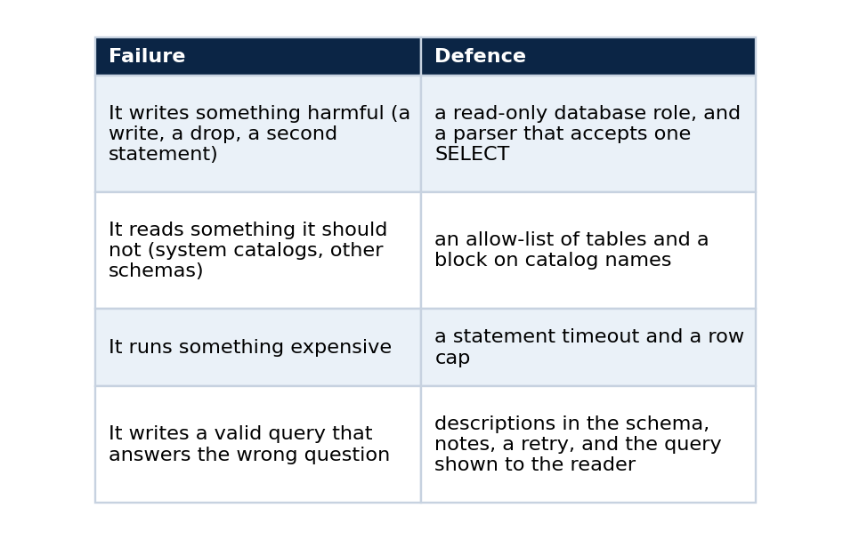
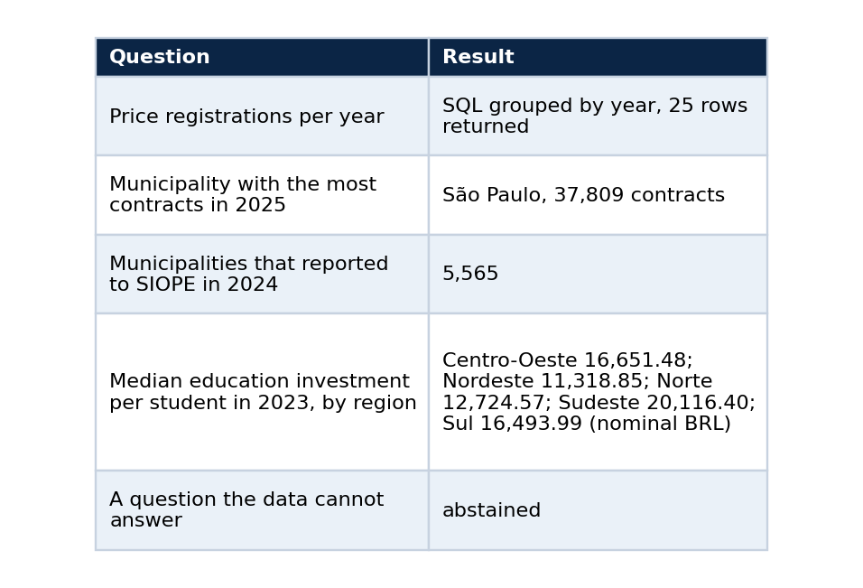

A read-only SQL agent for public data, and the ways it got the answer wrong first
A tutorial: let a language model write SQL over numeric tables, keep it on a short leash, show the query as evidence, and test it with real questions
Retrieval is the wrong tool for numbers. If someone asks for the median education spending per student by region, pasting five similar paragraphs into a prompt cannot give the right answer. A query can. So for the numeric datasets in my public chat, the model writes SQL, a database runs it, and the answer cites the query.
This tutorial builds that agent and shows what I changed when the first version misbehaved. The code is in rag-chat (backend/rag_chat_backend/sql_agent.py), and the tables are the ones from the companion article on the single Postgres.

Every step can refuse. Only a validated SELECT reaches the database, and a failure ends in an abstention.
What you will build
A function ask(question) that returns {sql, columns, rows, explanation} or an error, and a chat path that turns rows into a cited answer. It answers education-finance and procurement-count questions, refuses to touch anything outside an allow-list of tables, and cannot write.
Why text-to-SQL needs more than a prompt
A model that writes SQL can fail in four ways, and each needs its own defence.

The first three are mechanical, so code can guarantee them. The fourth is not, which is why the last defence is transparency.
Step 1: give it a role that cannot hurt you
Start with the database, not the model. The agent connects as a role that is read-only and has a short timeout.
CREATE ROLE sql_agent LOGIN PASSWORD :'agent_pw' CONNECTION LIMIT 6;
ALTER ROLE sql_agent SET statement_timeout = '10s';
ALTER ROLE sql_agent SET default_transaction_read_only = on;
GRANT SELECT ON ALL TABLES IN SCHEMA siope, ibge, bi TO sql_agent;
If every later check fails, this is the layer that still protects you.
Step 2: validate what the model writes
A model's output is untrusted input. Parse it with sqlglot and accept only one statement that is a SELECT over tables from an allow-list.
def validate_sql(sql: str, allowed: set[str]) -> str:
"""Return a single SELECT statement over allowed tables, or raise UnsafeSql. (abridged)"""
text = sql.strip().rstrip(";").strip()
if not text or len(text) > 4000:
raise UnsafeSql("empty or too long")
statements = sqlglot.parse(text, read="postgres") # a parse error is a rejection
if len(statements) != 1:
raise UnsafeSql("exactly one statement is allowed")
tree = statements[0]
for node in tree.walk(): # no INSERT, UPDATE, DELETE, DROP, ALTER, CREATE
if isinstance(node, (exp.Insert, exp.Update, exp.Delete, exp.Drop, exp.Alter, exp.Create, exp.Command)):
raise UnsafeSql("only SELECT is allowed")
cte_names = {cte.alias_or_name.lower() for cte in tree.find_all(exp.CTE)}
for table in tree.find_all(exp.Table): # every table must be on the allow-list
qualified = f"{table.db.lower()}.{table.name.lower()}" if table.db else table.name.lower()
if table.name.lower() in cte_names and not table.db:
continue
if qualified not in allowed:
raise UnsafeSql(f"table not allowed: {qualified}")
if re.search(r"\bpg_\w+|information_schema", text, re.I): # no system catalogs
raise UnsafeSql("system catalogs are not allowed")
return text
Then wrap the query so the result is bounded whatever the model wrote: SELECT * FROM (<validated sql>) AS q LIMIT 50.
Step 3: tell the model what the tables mean
The prompt holds the schema, and the schema should carry descriptions. I copy the column and table descriptions from the lake into Postgres COMMENTs during the load, and the agent reads them:
SELECT a.attname, format_type(a.atttypid, a.atttypmod), col_description(a.attrelid, a.attnum)
FROM pg_attribute a WHERE a.attrelid = 'siope.obt_fnde_siope_indicador_municipio_ano'::regclass
AND a.attnum > 0 AND NOT a.attisdropped ORDER BY a.attnum;
The system prompt states the rules in plain words:
You write one PostgreSQL SELECT statement that answers the user's question over the tables described below.
Rules: one statement, SELECT only, use only the listed tables and columns, qualify tables with their schema,
aggregate and ORDER BY when the question asks for a ranking or total, and add LIMIT 50 at most.
Use the statistic the question names: PERCENTILE_CONT(0.5) WITHIN GROUP (ORDER BY col) for a median,
AVG only for an average.
Answer with JSON only: {"sql": "...", "explanation": "one sentence about what the query measures"}.
If the tables cannot answer the question, answer {"sql": null, "explanation": "why"}.
Each base can also carry a short note, attached to the prompt, for knowledge the column comments cannot express (which table to prefer, which column is sparse, which year is partial).
Step 4: ask, run, repair once
for attempt in range(2):
reply = model.chat_json(SYSTEM, prompt + feedback)
try:
columns, rows = self.run(reply["sql"])
if not rows and not feedback:
feedback = "\n\nYour previous query returned no rows. Check the filters and ..."
continue
return {"sql": reply["sql"], "columns": columns, "rows": rows}
except UnsafeSql as error:
feedback = f"\n\nYour previous query was rejected: {error}. Write a corrected single SELECT."
except Exception as error:
feedback = f"\n\nYour previous query failed with: {str(error)[:200]}."
return {"error": "the model could not produce a valid query"}
One repair round is enough. More rounds mostly burn time and tokens on questions the data cannot answer.
Step 5: the answer must show its work
The chat turns the rows into cited lines and lets the model word the answer. The interface shows the query and the rows under the answer, in a collapsed section labelled "SQL and result". Someone who doubts a number can open it and read the exact statement.
Does it work? What the live tests showed
I asked questions through the public chat and recorded the result.

Each answer took between 5 and 30 seconds, because the model is called twice (once to write the query, once to word the answer) on a shared GPU. The slowest cases were the ones that ran while another job held the GPU.
The ways it got the answer wrong first
It picked the wrong table. For the per-student question, the first version chose a wide "general data" table whose expenditure columns are mostly empty from 2023 on, invented a filter on the reporting period, got zero rows and abstained. The data was there, in a different table. The repair was a short note attached to the base, telling the agent which table holds the per-student indicator and that the general table is sparse, plus a ready-made view and comments on it. After that the agent chose the right source.
It returned nothing and gave up. An empty result is usually a wrong filter. I added the one retry with an explicit "no rows, check the filters" instruction, and the second attempt can change tables.
It answered a different question than it was asked. A query that asked for the state with the highest median used AVG, and the answer called it a median. I added a sentence to the system prompt: use PERCENTILE_CONT(0.5) for a median and AVG only for an average. A validator cannot catch this. Only reading the SQL can, which is another reason to show it.
The plumbing gave up before the agent did. The web proxy stopped waiting after 25 seconds while the agent was still working, and the interface showed "service unavailable". I raised the proxy limit to 100 seconds, raised the model timeout to 45 seconds, and made every failure inside the agent end in an abstention instead of a server error.
How to test your own agent
- Write ten questions whose answers you can compute by hand, and keep the numbers.
- Run them through the full path and compare. A query that runs is not a query that is right.
- Add a question the data cannot answer and check that it abstains.
- Time each answer, and set your proxy and model timeouts above the slowest.
- Read the SQL of every answer you plan to quote.
Limits
The agent is as good as the notes and comments you give it, and it can still choose badly. The allow-list, the read-only role and the timeout bound the damage and do not prove the answer right. The statistics quoted above are nominal BRL, the latest reporting period per municipality and year, and I have not checked them against an independent source. Latency is high for a demo, and two sequential model calls are the reason.
Code and links
- rag-chat:
sql_agent.py, tests, and the interface that shows the query - vps_rt_infra: the roles, views and comments the agent reads
- Kaggle datasets: the public datasets behind these projects, with schemas and SHA-256 manifests
- GitHub profile: all repositories
My portfolio: https://rangeltech.net